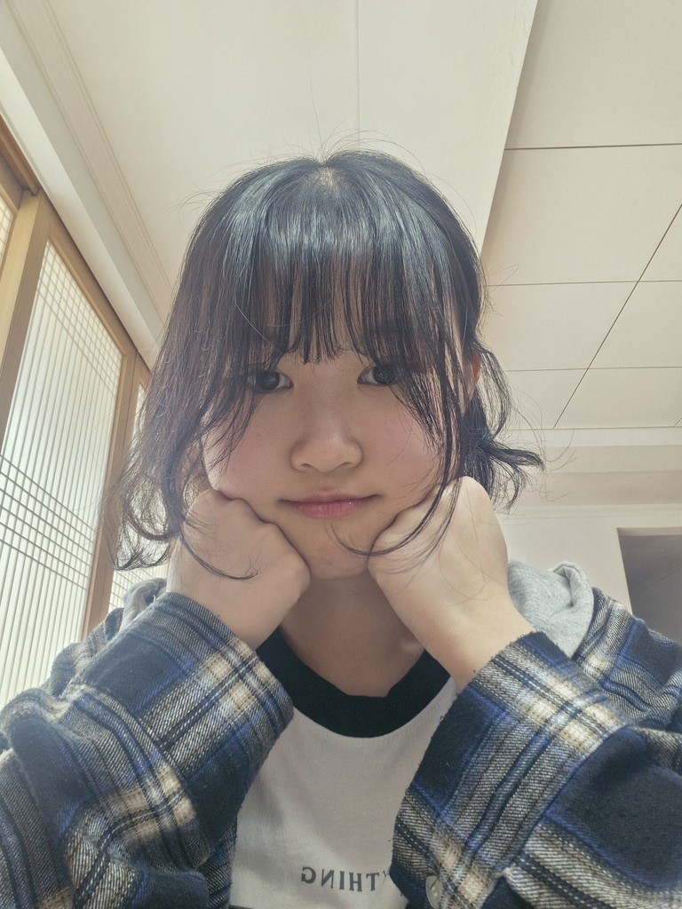

1. 개요
대한민국 출신의 충남대학교 언어학과의 과대 겸 학생회
경해여자고등학교 출신으로 수능에서 좋은 성적을 거두어 충남대학교 언어학과에 입학하여 현재까지 재학중이다.
경해여자고등학교 출신으로 수능에서 좋은 성적을 거두어 충남대학교 언어학과에 입학하여 현재까지 재학중이다.
|
이아영 李娥滢 | LEE AYUNG |
|
|  | |
| 출생 | 2005년 04월 15일 (20세) |
| 경상남도 진주시 평거동 | |
| 국적 |
 대한민국
대한민국
|
| 본관 | 경주 이씨 (慶州 李氏) |
| 신체 | 158cm | 43 ~ 45kg[1] | B형 |
| 가족 | 아버지, 어머니, 언니 |
| 학력 |
서진초등학교 (졸업)
진주여자중학교 (졸업) 경해여자고등학교 (졸업) 충남대학교 인문대학 (언어학 24 / 재학) |
| 별명 | 똥강아지, 똥고양이, 강아지, 고양이, 예삐, 애기 |
| MBTI | INFP [2] |
| 종교 | 무교 |
| 별명 | 설명 |
| 강아지 | 가장 자주 불리는 별명으로 활발한 성격과 동글동글한 외모 그리고 특유의 말투 덕분에 이러한 별명을 얻게 되었고 본인 또한 이 별명을 좋아하는 듯하다. |
| 고양이 | 강아지 다음으로 자주 불리는 별명으로 강아지와는 달리 외모나 성격 때문에 생긴 외모가 아닌 "냐옹"이라는 말을 자주하여 이러한 별명으로 불리게 되었다. 본인은 고양이 보다는 강아지라는 별명을 더 선호하는 듯하다. |
| 똥강아지 똥고양이 |
강아지, 고양이의 파생 버전으로 주로 사고를 치거나 허당스러운 모습을 보여줬을 때 부르는 별명이다. |
| 애기 | 평소보다 조금 더 앙탈을 많이 부리는 날 불리는 별명 |
| 영수 | 가족들이 주로 그녀를 부르는 별명으로 아"영"과 철"수"를 합친 이름으로 큰 의미는 없다고 한다. |